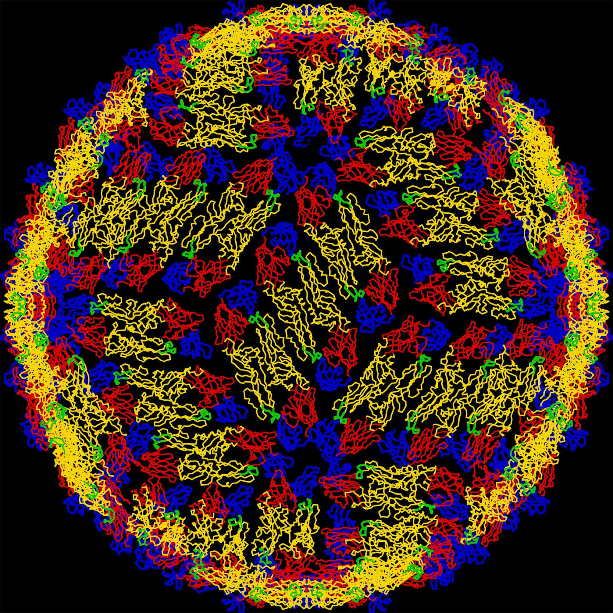

Master's Thesis · 2020
Minimum Complexity Echo State Networks for Genome & Sequence Analysis
Echo state networks — recurrent neural networks with a fixed reservoir and a trainable linear readout — explored with an eye toward feasibility of DNA-based implementation. The work investigates network size and sparsity to find minimum-complexity architectures that still outperform linear baselines.